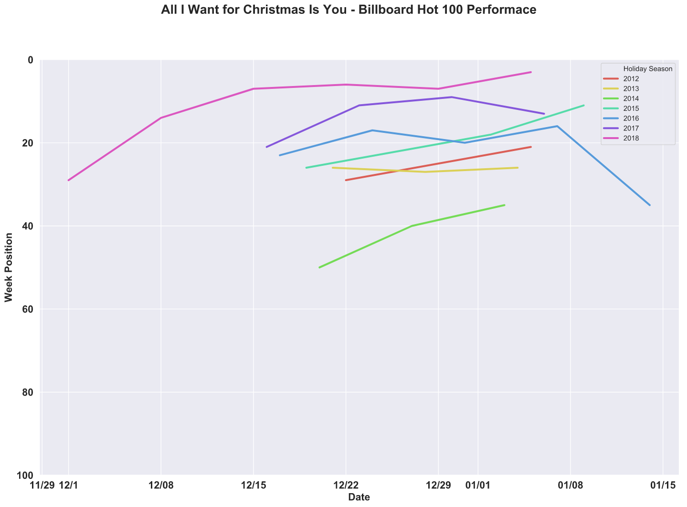
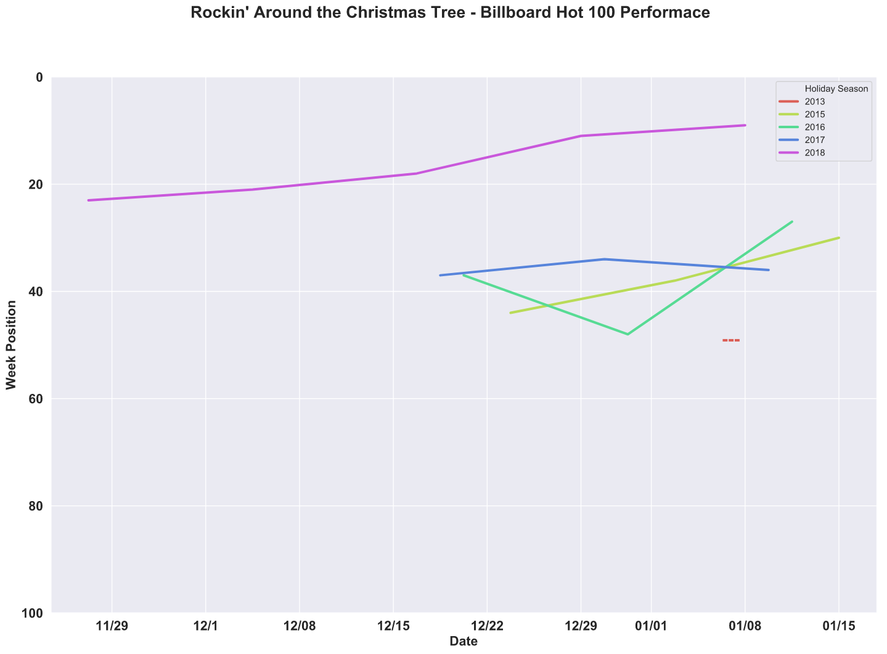
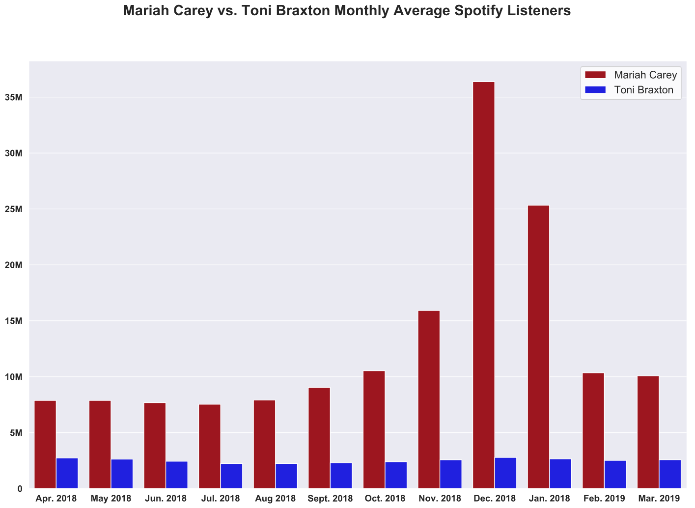
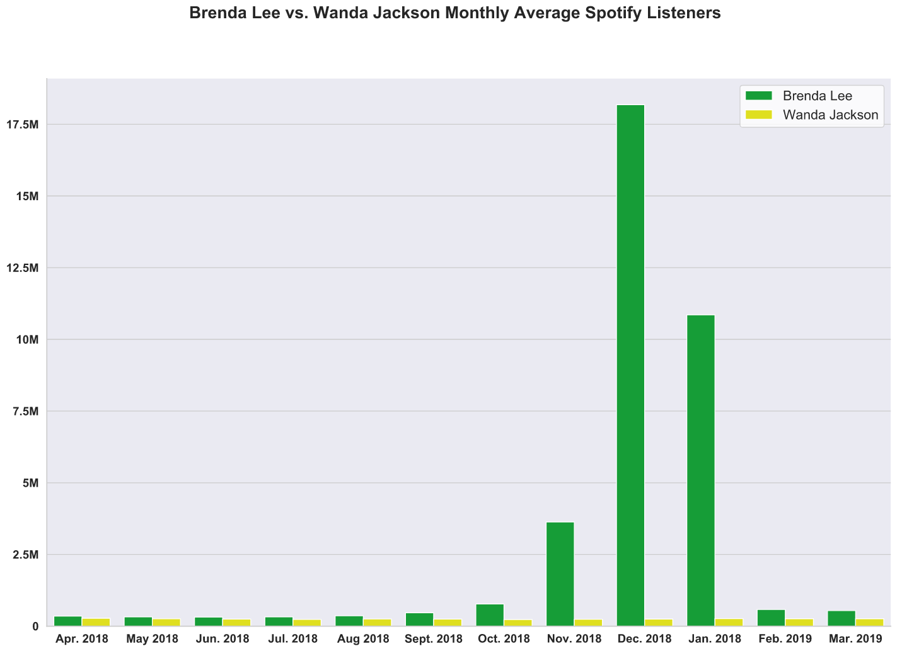

The holiday season has an almost mythical ability to evoke a wide range of emotions. For many, the end of the year is brimming with joy, excitement, and gratitude. For others, it can be weeks filled with pain, cynicism, or misanthropy. Regardless of personal attitudes towards the holidays, a main reason that this time of year can spur such intense feelings lies in the power of tradition.
While individuals have unique traditions during the holiday season, those of broader American society revolve around a handful of activities: attending religious services, connecting with family, eating bountiful meals, exchanging various gifts, getting dangerously inebriated, watching timeless movies and plays, and of course Christmas music.
And out of all the traditional classics, contemporary covers, and ingenious originals in the holiday discography, there are two tunes that truly stand out: Mariah Carey's "All I Want for Christmas Is You" and Brenda Lee's "Rockin' Around the Christmas Tree". If the influence of a holiday song can be derived from its roots in tradition, no song can parallel Mariah and Brenda's Christmas epics. They are the only two songs that have appeared in eight separate instances on Billboard's weekly Hot 100 song chart. It's worth taking a dive into some numbers to illustrate just how magical they genuinely are.
"All I Want for Christmas is You" off Carey's 1994 Merry Christmas album was released to critical acclaim. At the time, Carey was in her prime, having just come off the success of her third album, Music Box, which debuted at #2 on the Billboard 200 album chart and had nearly half of its songs crack the top 10 on the Billboard Hot 100. However, aside from the week ending on January 8th, 2000, her lead single off of Merry Christmas did not make the Billboard Hot 100 chart until the week ending on December 22nd, 2012. Since then, the song has charted every year.

What is fascinating about the song's Billboard Hot 100 performance is the truncated curve of it's weekly journey. Instead of taking the life cycle of a normal chart-climber that rockets up to the top 10 as it gains popularity and then gradually fizzles out, Carey's Christmas classic gains steam quickly as the holiday season races by and then just after New Year's Day, disappears entirely from the list, never to be seen again for 10 months. Interest in the song could not be more seasonal.
In contrast to Mariah Carey, Brenda Lee penned "Rockin' Around the Christmas Tree" in 1958 when her career as a singer was starting at the age of thirteen! The Atlanta native would go on to have immense success as a pop artist throughout the 1960s. Yet the initial release and rerelease of "Rockin' Around the Christmas Tree" were flops until Lee's popularity catapulted it into the Billboard Hot 100 in 1960. The song charted the next two Christmases but eventually fell out of popularity as a holiday hit until it recharted 62 years later on the week ending on January 4th, 2014. The tune has rocked its way to the top of the charts every December since then, only to fall off a cliff right after January 1st.

The common denominator behind the renewed success of these two holiday songs is glaringly obvious. It is no coincidence that these two songs have reentered the American musical pop charts as smartphones and music streaming services such as Spotify have become the dominant way that the world consumes music. Holiday music in particular, seems perfectly positioned to fit into the streaming service music rental model. If you only want to listen to the specific songs for about six weeks a year, it is now infinitely more accessible to stream and play them on say a Bluetooth speaker at your holiday party, rather than buy CDs and play them on a stereo as one would have done a mere 20 years earlier.
Since 2017 — the earliest that Spotify Charts top streaming data is available — during November and December, both songs have had streaming numbers comparable to each year's top tracks.
Interestingly, since 2017, "All I Want for Christmas" has entered the Spotify Top 200 chart exactly on November 1st, a trend Carey has seemingly picked up on. "Rockin' Around the Christmas Tree" has appeared on the Spotify Top 200 later in the first week of November. Streaming numbers of both songs for the holiday season seem to mirror the Billboard Chart performance for most of the decade: a quick rise in chart and streaming popularity through November and December, a Christmas crescendo, and a post-New Year's dissipation.
To underscore the extraordinary success of these songs, we can to look at what they are doing for Mariah Carey and Brenda Lee's careers today. Both singer's averaged Spotify "Monthly Listeners" compared to contemporaries that have not released popular Christmas music — Toni Braxton and Wanda Jackson, respectively — is illustrative of how dependent their total streaming numbers are on the popularity of their holiday hits.


Without a doubt, "All I Want for Christmas is You" and "Rockin' Around the Christmas Tree" will hit the Billboard Hot 100 again this year, and every year for the foreseeable future, as they have been stapled to the forefront of every American holiday playlist. "All I Want for Christmas Is You" is already the 12th best-selling single of all time and has reportedly netted Carey over 60 million dollars in royalties, along with book and film adaptations. At the time of the 50th anniversary of its release, "Rockin' Around the Christmas Tree" was the fourth most downloaded Christmas song ever. With no end in sight, these songs will continue to capture the popular holiday imagination of the American public, and carry the careers of the artists who sing them long after their peaks.
Code behind this analysis can be found here!